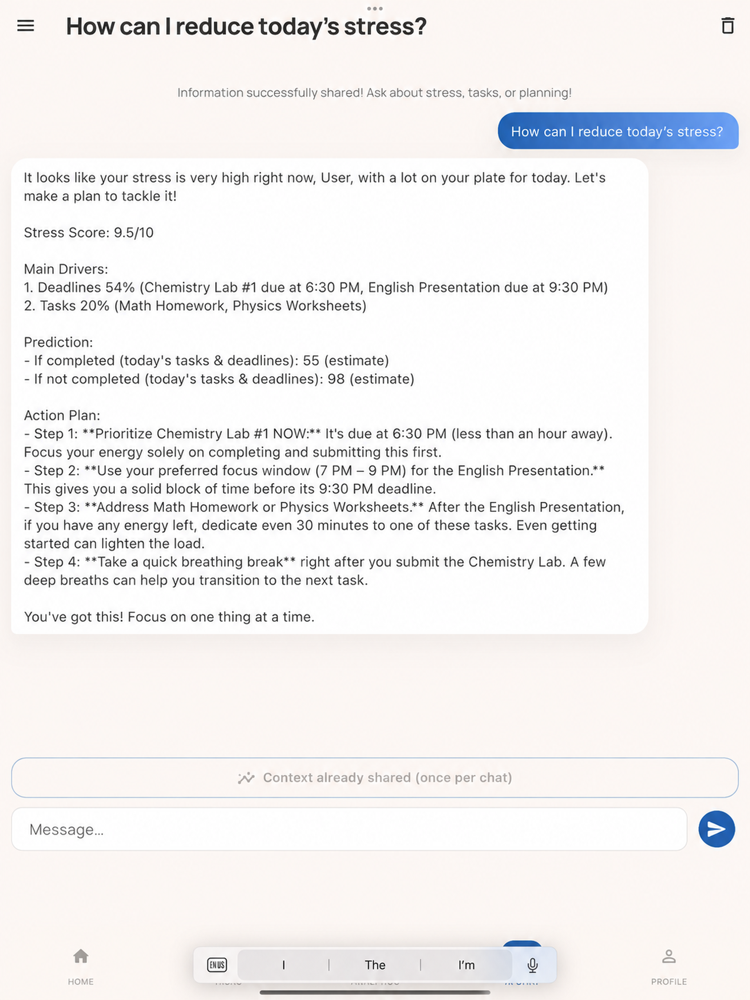
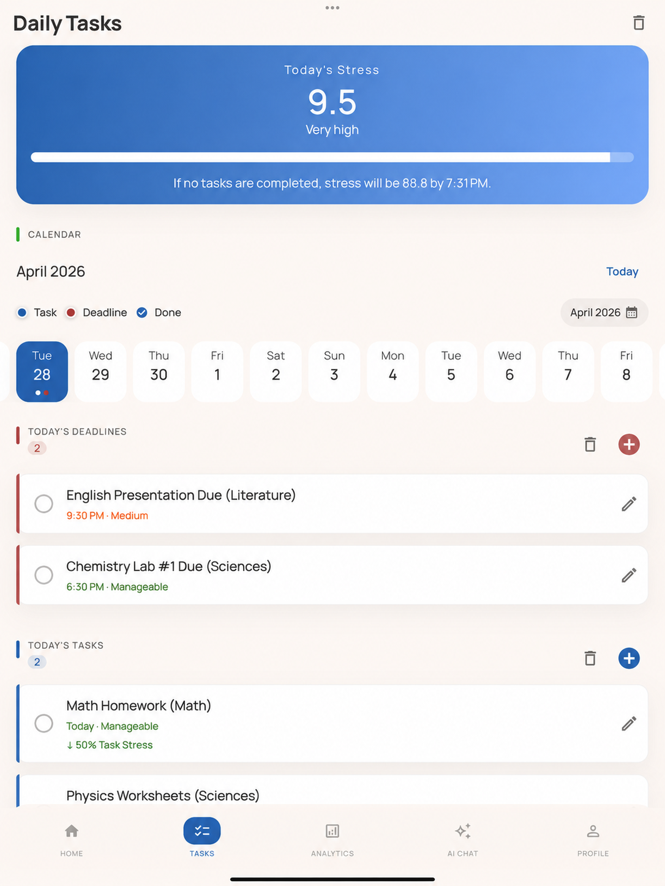
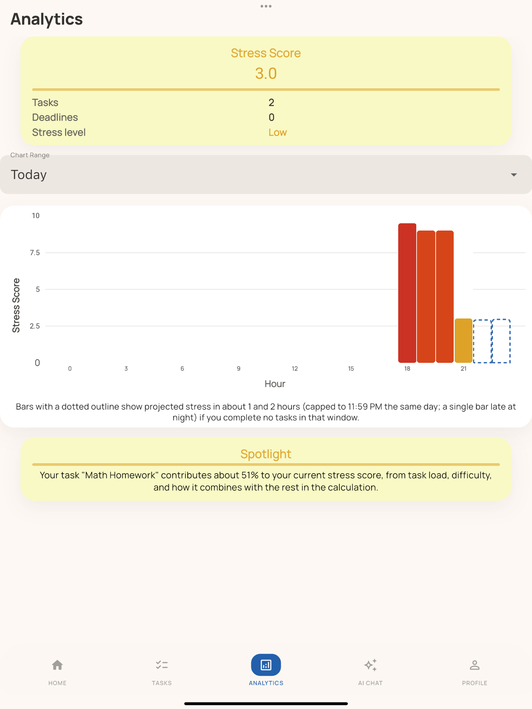

StressTide helps users track tasks, understand workload patterns, and plan ahead with a personalized stress score.
Add tasks and deadlines in one organized space.
Keep assignments, tests, projects, and personal tasks together so your workload is easier to see and manage.
See how your workload, deadlines, and task difficulty affect your stress level.
Your stress score gives you a clearer estimate of how heavy your day might feel based on the tasks you enter.
Mark tasks as easy, manageable, medium, or hard to make planning more realistic.
Difficulty levels help StressTide understand that not all tasks are equal. A small worksheet and a major exam should not feel the same.
Sort tasks by subjects like math, sciences, languages, literature, and social studies.
Organizing by subject helps you notice which classes are creating the most pressure during the week.
View what is coming up each day so deadlines do not sneak up like tiny academic ninjas.
Daily planning helps you break large workloads into clearer chunks before everything becomes a deadline avalanche.
Use AI support to better understand your workload and make smarter planning decisions.
AI support can help explain your workload patterns and suggest ways to plan your day more realistically.
StressTide turns your tasks and deadlines into a clearer picture of your day, helping you notice heavy workload patterns before they become overwhelming. AI support is there to help you plan you day's workload!

Your stress score is designed to reflect more than just the number of tasks. It can consider task difficulty, deadlines, subject load, and daily patterns to give a more realistic view of your workload.

Charts for the current day, the week, 2 weeks, and the month are available to help you visualize your stress throughout the course of the time period. Download today to see just how much stress you have and how to reduce that!
